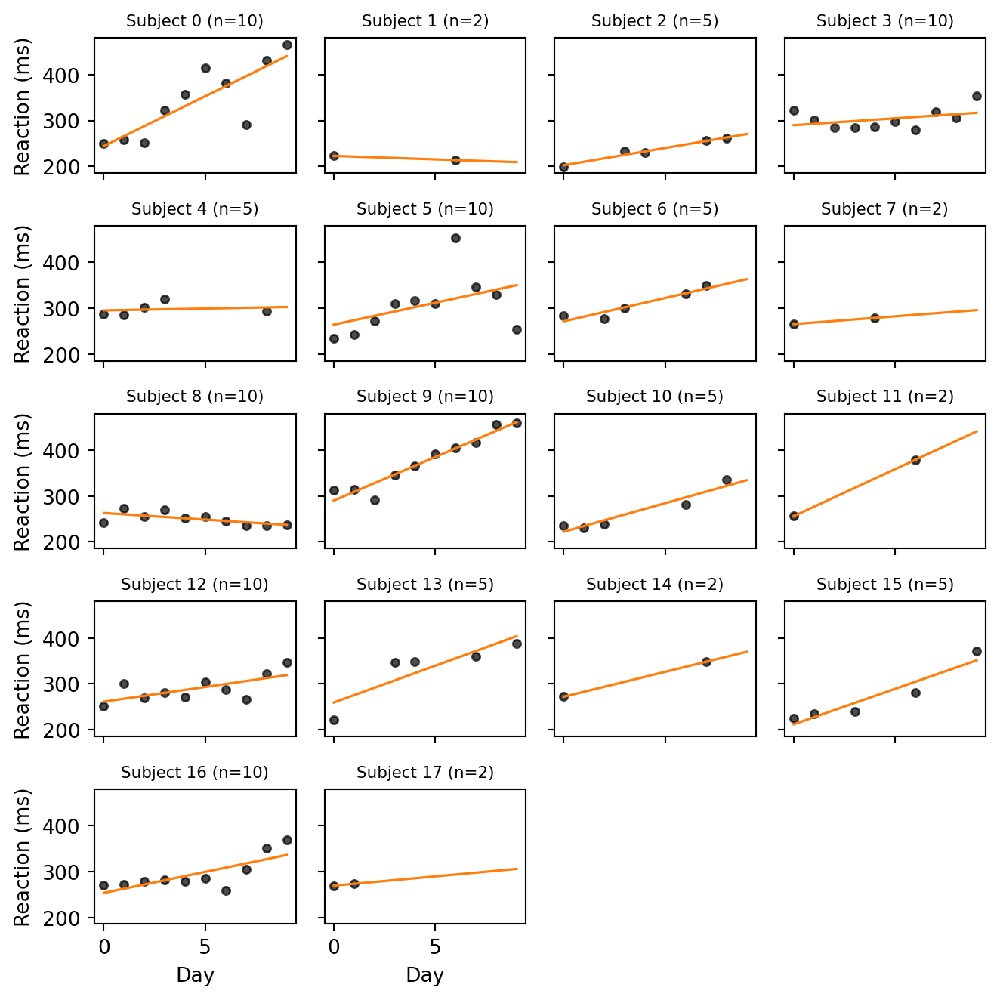
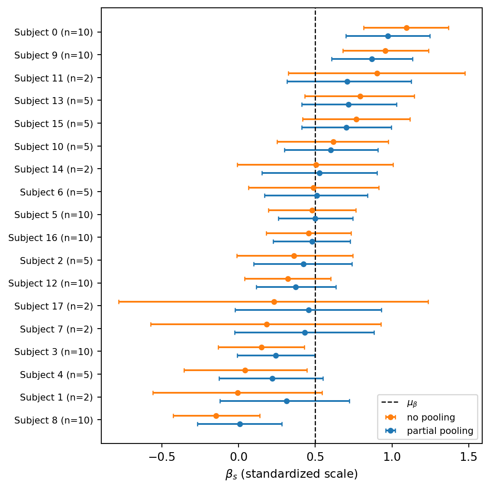
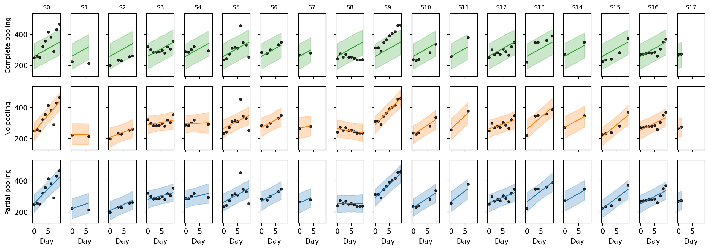

import matplotlib.pyplot as plt
import pandas as pd
import jax
from jax import random
import jax.numpy as jnp
import numpyro
import numpyro.distributions as dist
from numpyro.infer import MCMC, NUTS, Predictive
import arviz as az
rng_key = random.PRNGKey(42)Exercise 8: Multilevel regression
In Exercise 7 we fit a single regression line to all the data at once. But many real datasets have group structure: measurements come from different subjects, sites, batches, or schools, and each group may behave somewhat differently. A multilevel (or hierarchical) model treats each group as having its own parameters, while tying those parameters together through a shared prior whose hyperparameters are themselves learned from the data. This produces partial pooling: groups with little data borrow strength from the global pattern, while groups with lots of data are allowed to deviate.
The dataset is the classic sleepstudy from Belenky et al. (2003), in which 18 subjects had their sleep restricted to 3 hours per night for 9 nights and their reaction times measured daily on a psychomotor vigilance task. We will fit three regressions to it — complete pooling, no pooling, and partial pooling — diagnose their MCMC fits, visualize the shrinkage that partial pooling induces, criticize each model with posterior predictive checks, and finally compare them by their expected out-of-sample predictive accuracy via PSIS-LOO and a held-out test set.
NoteA note on the workflow steps we skip
The BDA workflow from 5 Bayesian data analysis includes a prior predictive check and a fake-data parameter-recovery step before fitting on real data. We practiced both in Exercise 7 and will not repeat them here in order to keep this sheet focused on the multilevel-specific issues (pooling, shrinkage, model comparison). For your own modeling work, treat their omission as a shortcut justified by the simplicity of the linear-Gaussian likelihood, not as a recommendation.
Setup
NotePrerequisites: Python libraries
This exercise uses the same libraries as Exercise 7, with the addition of pandas for loading the CSV file:
- JAX — numerical computing backend.
- NumPyro — probabilistic programming and MCMC inference.
- ArviZ — diagnostics and visualization.
- matplotlib — plotting.
- pandas — reading the CSV data file.
Install via:
pip install jax numpyro arviz matplotlib pandasThe data
The sleepstudy dataset records the average reaction time (in milliseconds) on a 10-minute psychomotor vigilance task for each of 18 subjects on each of 10 consecutive days of sleep restriction. To make the multilevel structure more interesting, we have artificially thinned the data so that some subjects retain all 10 measurements, others only 5, and a few only 2. The dropped rows are kept aside in a separate held-out file and we will use them in Part 5 as a clean test set for model comparison.
Load the data from sleepstudy_processed.csv:
df = pd.read_csv("../data/exercise-8/sleepstudy_processed.csv")
day = jnp.array(df["day"].to_numpy(), dtype=jnp.float32)
reaction = jnp.array(df["reaction"].to_numpy(), dtype=jnp.float32)
subject_idx = jnp.array(df["subject_idx"].to_numpy(), dtype=jnp.int32)
n_subjects = int(df["subject_idx"].nunique())
n_obs = len(df)
n_subjects, n_obs(18, 110)The columns are subject_idx (taking values in \(\{0, \ldots, S-1\}\)), day, and reaction. There are \(S = 18\) subjects and \(N = 110\) observations in total.
Task 0 — Visualize the per-subject trends. Plot reaction time vs. day for each subject. Fit a line through each subject’s points and overlay it. You can fit a line through each subject’s points with jnp.polyfit, passing deg=1 to obtain the slope and intercept. What features do you notice that a single global regression would miss?
TipSolution
Code
fig, axes = plt.subplots(5, 4, figsize=(7, 7), sharex=True, sharey=True)
day_grid = jnp.linspace(0, 9, 50)
for s, ax in enumerate(axes.flat):
if s >= n_subjects:
ax.axis("off")
continue
mask = subject_idx == s
xs = day[mask]
ys = reaction[mask]
slope, intercept = jnp.polyfit(xs, ys, 1)
ax.scatter(xs, ys, s=15, color="black", alpha=0.7)
ax.plot(day_grid, intercept + slope * day_grid, color="C1", linewidth=1.2)
ax.set_title(f"Subject {s} (n={int(mask.sum())})", fontsize=8)
for ax in axes[-1, :]:
ax.set_xlabel("Day")
for ax in axes[:, 0]:
ax.set_ylabel("Reaction (ms)")
plt.tight_layout()
plt.show()
Most subjects with enough observations show a positive trend: as the days of sleep restriction accumulate, reaction times rise. But the amount of degradation varies substantially across subjects, and baseline reaction times also differ markedly. A single global regression line would average these very different trajectories into a moderate slope that fits no individual particularly well.
For the subjects with only 2 observations, the line is an interpolation. It passes exactly through both points by construction and is therefore at the mercy of their noise: a single noisy measurement can flip the slope from steep to flat or even negative. We will see that this is precisely the situation in which partial pooling helps.
Standardizing the data
Before fitting any model, it pays to put the predictor and the response on a common, unit-free scale. We do this by standardizing (also called z-scoring): for each variable \(v\) we subtract the sample mean and divide by the sample standard deviation, \[ z_v = \frac{v - \bar{v}}{\text{sd}(v)}, \] so that \(z_v\) has mean \(0\) and standard deviation \(1\). We will fit our models on the standardized scale, and back-transform when we want to report results in the original units (milliseconds and days).
day_mean, day_std = day.mean(), day.std()
reaction_mean, reaction_std = reaction.mean(), reaction.std()
z_day = (day - day_mean) / day_std
z_reaction = (reaction - reaction_mean) / reaction_stdWe keep the four constants day_mean, day_std, reaction_mean, reaction_std so that we can later un-standardize the model’s predictions: a posterior draw \(z_y\) on the standardized scale corresponds to \(y = \bar{y} + \text{sd}(y) \cdot z_y\) on the original scale.
NoteWhy standardize?
Standardization helps in two ways: it makes priors easier to choose, and it makes the posterior easier for MCMC to explore.
Priors become easier to set. On the standardized scale, both predictor and response have unit standard deviation by construction, so a \(\text{Normal}(0, 1)\) prior on slopes and intercepts is automatically weakly informative in the sense of Choosing priors and prior predictive checks: it allows the data to speak while ruling out absurdly extreme values. The same prior recipe transports across datasets, since the units have been removed.
The posterior geometry becomes nicer. When the predictor is centered, the posterior correlation between the intercept and the slope is greatly reduced. This is because moving the slope no longer drags the intercept along by a large lever arm. Less correlated posteriors are easier for MCMC to explore because they don’t have narrow ridges or funnels that are tricky to navigate.
Part 1: Three pooling regimes
We will fit three regression models that differ only in how they treat the per-subject parameters: complete pooling (one global line), no pooling (one independent line per subject), and partial pooling (per-subject lines tied together by a shared prior). In each subtask below we state the model mathematically and then translate it into NumPyro code.
Throughout we use \(i = 1, \ldots, N\) for observations and \(s = 1, \ldots, S\) for subjects, and write \(s[i]\) for the subject of the \(i\)-th observation. All three models use the standardized variables \(x_i = z_{\text{day},i}\) and \(y_i = z_{\text{reaction},i}\), and share a common call signature:
def model_*(x, subject_idx, y=None, n_subjects=n_subjects): ...Each model ends with numpyro.sample("obs", dist.Normal(mu, sigma), obs=y), so the same function generates fake data when y=None and conditions on data when y is provided. The keyword argument n_subjects=n_subjects captures the value computed in the data section as a default, so we don’t have to pass it explicitly to mcmc.run, Predictive, or log_likelihood.
Note that all three models share a single observation-level scale \(\sigma\) across subjects. Letting each subject have its own \(\sigma_s\) is a natural extension, but we keep \(\sigma\) pooled to keep the focus on the intercepts and slopes.
Task 1a — Complete pooling
Ignore subject identity entirely: one global intercept and slope describe everyone.
\[ \begin{aligned} \alpha &\sim \text{Normal}(0, 1) \\ \beta &\sim \text{Normal}(0, 1) \\ \sigma &\sim \text{Exponential}(1) \\ \mu_i &= \alpha + \beta \, x_i \\ y_i &\sim \text{Normal}(\mu_i, \sigma) \end{aligned} \]
This is just a Gaussian linear regression and serves as a baseline: if subject identity does not matter, this simple model will do as well as any.
Write model_pooled(x, subject_idx, y=None). The argument subject_idx is unused here but kept for a uniform signature.
TipSolution
def model_pooled(x, subject_idx, y=None):
alpha = numpyro.sample("alpha", dist.Normal(0, 1))
beta = numpyro.sample("beta", dist.Normal(0, 1))
sigma = numpyro.sample("sigma", dist.Exponential(1.0))
mu = alpha + beta * x
numpyro.sample("obs", dist.Normal(mu, sigma), obs=y)
Note
In this and the following models, we purposefully do not register mu with numpyro.deterministic. In Task 5 we evaluate log_likelihood on a test set of a different size, and having mu stored with the training length would causes a shape mismatch that requires a workaround.
Task 1b — No pooling
Each subject gets its own independent intercept and slope, with no information shared between subjects.
\[ \begin{aligned} \alpha_s &\sim \text{Normal}(0, 1), \quad s = 1, \ldots, S \\ \beta_s &\sim \text{Normal}(0, 1), \quad s = 1, \ldots, S \\ \sigma &\sim \text{Exponential}(1) \\ \mu_i &= \alpha_{s[i]} + \beta_{s[i]} \, x_i \\ y_i &\sim \text{Normal}(\mu_i, \sigma) \end{aligned} \]
This is the opposite extreme: each subject is fit independently, as if the other subjects did not exist. It captures the per-subject variation but cannot generalize to a new subject, and overfits subjects with very few observations.
Write model_unpooled(x, subject_idx, y=None, n_subjects=n_subjects) with one \((\alpha_s, \beta_s)\) pair per subject.
The per-subject parameters form a vector of \(S\) independent draws from the same prior. This kind of structure can be represented in NumPyro using a plate. See the box below for a quick introduction. Once you have \(\alpha_s\) and \(\beta_s\) as length-\(S\) vectors, gather the right entries for each observation with array indexing: alpha_s[subject_idx] produces a length-\(N\) vector containing the intercept of the subject for each row.
NoteBackground: NumPyro plates
A numpyro.plate(name, size) is a context manager that turns a single numpyro.sample call into independent draws of length size. The plate corresponds to plate notation for diagrams introduced in Bayesian Data Analysis. The line
with numpyro.plate("subjects", n_subjects):
alpha_s = numpyro.sample("alpha_s", dist.Normal(0, 1))draws a vector of i.i.d. \(\text{Normal}(0, 1)\) values of length n_subjects and registers them as a single inference site named "alpha_s". You can have multiple sample statements inside the same plate. They are vectorized over the same axis.
Why not just a for loop? The same model could be written without a plate as
alpha_s = []
for s in range(n_subjects):
alpha_s.append(numpyro.sample(f"alpha_{s}", dist.Normal(0, 1)))
alpha_s = jnp.stack(alpha_s)This loop creates n_subjects separate sample sites, each with its own scalar distribution. However, this runs much slower than a single vectorized sample inside a plate, and it also creates a more cluttered trace with many more sites to keep track of. Whenever you want to use a for loop to create multiple independent parameters, it’s a sign that you should be using a plate instead.
TipSolution
def model_unpooled(x, subject_idx, y=None, n_subjects=n_subjects):
with numpyro.plate("subjects", n_subjects):
alpha_s = numpyro.sample("alpha_s", dist.Normal(0, 1))
beta_s = numpyro.sample("beta_s", dist.Normal(0, 1))
sigma = numpyro.sample("sigma", dist.Exponential(1.0))
mu = alpha_s[subject_idx] + beta_s[subject_idx] * x
numpyro.sample("obs", dist.Normal(mu, sigma), obs=y)Task 1c — Partial pooling
Each subject still has its own \((\alpha_s, \beta_s)\), but they are drawn from a common prior whose location and scale are themselves inferred. Subjects with few or noisy observations are pulled (shrunk) toward the population means.
\[ \begin{aligned} \mu_\alpha, \mu_\beta &\sim \text{Normal}(0, 1) \\ \tau_\alpha, \tau_\beta &\sim \text{Exponential}(1) \\ \alpha_s &\sim \text{Normal}(\mu_\alpha, \tau_\alpha), \quad s = 1, \ldots, S \\ \beta_s &\sim \text{Normal}(\mu_\beta, \tau_\beta), \quad s = 1, \ldots, S \\ \sigma &\sim \text{Exponential}(1) \\ \mu_i &= \alpha_{s[i]} + \beta_{s[i]} \, x_i \\ y_i &\sim \text{Normal}(\mu_i, \sigma) \end{aligned} \]
The hyperparameters \(\mu_\alpha\) and \(\mu_\beta\) describe the population-level intercept and slope — what we would expect for an average new subject — and \(\tau_\alpha\), \(\tau_\beta\) describe how much subjects vary around them. The model uses the data from all subjects to learn these, then uses them as a prior on each individual \(\alpha_s, \beta_s\).
Write model_partial(x, subject_idx, y=None, n_subjects=n_subjects). The structure is the same as model_unpooled, but the priors on \(\alpha_s\) and \(\beta_s\) now use the learned hyperparameters \((\mu_\alpha, \tau_\alpha)\) and \((\mu_\beta, \tau_\beta)\) instead of fixed \((0, 1)\). Sample the hyperparameters outside the plate.
TipSolution
def model_partial(x, subject_idx, y=None, n_subjects=n_subjects):
mu_alpha = numpyro.sample("mu_alpha", dist.Normal(0, 1))
mu_beta = numpyro.sample("mu_beta", dist.Normal(0, 1))
tau_alpha = numpyro.sample("tau_alpha", dist.Exponential(1.0))
tau_beta = numpyro.sample("tau_beta", dist.Exponential(1.0))
with numpyro.plate("subjects", n_subjects):
alpha_s = numpyro.sample("alpha_s", dist.Normal(mu_alpha, tau_alpha))
beta_s = numpyro.sample("beta_s", dist.Normal(mu_beta, tau_beta))
sigma = numpyro.sample("sigma", dist.Exponential(1.0))
mu = alpha_s[subject_idx] + beta_s[subject_idx] * x
numpyro.sample("obs", dist.Normal(mu, sigma), obs=y)When you suspect a shape bug, the Debugging models technique from Implementing in NumPyro is invaluable: trace the model once with numpyro.handlers.seed + numpyro.handlers.trace and inspect the shape of every site. Here we use it to confirm that the per-subject parameters are length-\(S\) and obs is length-\(N\):
with numpyro.handlers.seed(rng_seed=0):
trace = numpyro.handlers.trace(model_partial).get_trace(
x=z_day, subject_idx=subject_idx, y=None
)
for name, site in trace.items():
print(f"{name:>10s} shape={tuple(site['value'].shape)}") mu_alpha shape=()
mu_beta shape=()
tau_alpha shape=()
tau_beta shape=()
subjects shape=(18,)
alpha_s shape=(18,)
beta_s shape=(18,)
sigma shape=()
obs shape=(110,)
NoteAside: centered vs. non-centered parametrization
The model above is the centered parametrization: each \(\alpha_s\) is drawn directly from \(\text{Normal}(\mu_\alpha, \tau_\alpha)\), so the prior on \(\alpha_s\) depends on the values of the hyperparameters. An algebraically equivalent way to write the same model introduces a standardized auxiliary variable and reconstructs \(\alpha_s\) as a deterministic transform:
\[ z_s^\alpha \sim \text{Normal}(0, 1), \qquad \alpha_s = \mu_\alpha + \tau_\alpha \, z_s^\alpha, \]
and analogously for \(\beta_s\). By the change-of-variables rule the two formulations encode the same Bayesian model, so the resulting posteriors over \((\mu_\alpha, \tau_\alpha, \alpha_1, \ldots, \alpha_S)\) are identical.
What is not identical is the geometry that NUTS sees. NUTS samples the latent variables the model registers: \(\alpha_s\) in one case, \(z_s^\alpha\) in the other. In the centered version the posterior of \((\log \tau_\alpha, \alpha_s)\) has a funnel shape: small \(\tau_\alpha\) pinches the \(\alpha_s\) near \(\mu_\alpha\), large \(\tau_\alpha\) lets them spread out, and a single step size cannot fit both regions. In the non-centered version \(z_s^\alpha\) is sampled from a fixed unit Normal regardless of \(\tau_\alpha\), removing the funnel from the latent geometry.
def model_partial_nc(x, subject_idx, y=None, n_subjects=n_subjects):
mu_alpha = numpyro.sample("mu_alpha", dist.Normal(0, 1))
mu_beta = numpyro.sample("mu_beta", dist.Normal(0, 1))
tau_alpha = numpyro.sample("tau_alpha", dist.Exponential(1.0))
tau_beta = numpyro.sample("tau_beta", dist.Exponential(1.0))
with numpyro.plate("subjects", n_subjects):
z_alpha = numpyro.sample("z_alpha", dist.Normal(0, 1))
z_beta = numpyro.sample("z_beta", dist.Normal(0, 1))
sigma = numpyro.sample("sigma", dist.Exponential(1.0))
alpha_s = numpyro.deterministic("alpha_s", mu_alpha + tau_alpha * z_alpha)
beta_s = numpyro.deterministic("beta_s", mu_beta + tau_beta * z_beta)
mu = alpha_s[subject_idx] + beta_s[subject_idx] * x
numpyro.sample("obs", dist.Normal(mu, sigma), obs=y)The non-centered form is the safer default for hierarchical models, especially when the data are sparse or the population scales \(\tau\) are small. For our sleepstudy data, both parametrizations fit fine and produce essentially identical diagnostics. We stick with the centered version model_partial in the remainder of the exercise.
Part 2: Inference
We now run NUTS on each of the three models and inspect the diagnostics. To avoid repeating boilerplate, we wrap the inference in a small helper that runs four chains and returns the MCMC object. We will convert each MCMC object to an ArviZ InferenceData only when needed (e.g. for az.summary and az.compare), and otherwise work with mcmc.get_samples() directly. We use 1000 warmup and 2000 sampling iterations per chain.
def run_mcmc(model, rng_key, **model_kwargs):
kernel = NUTS(model)
mcmc = MCMC(
kernel,
num_warmup=1000,
num_samples=2000,
num_chains=4,
progress_bar=False,
)
mcmc.run(rng_key, **model_kwargs)
return mcmcWe split the master rng_key once so each fit uses a fresh sub-key:
k_pooled, k_unpooled, k_partial = random.split(rng_key, 3)
data_kwargs = dict(x=z_day, subject_idx=subject_idx, y=z_reaction)
mcmc_pooled = run_mcmc(model_pooled, k_pooled, **data_kwargs)
mcmc_unpooled = run_mcmc(model_unpooled, k_unpooled, **data_kwargs)
mcmc_partial = run_mcmc(model_partial, k_partial, **data_kwargs)Task 2 — Diagnose convergence. For each fit, call az.summary on the top-level parameters and check that \(\hat{R} \le 1.01\) and that the effective sample sizes ess_bulk and ess_tail are at least a few hundred. Also count divergent transitions: NumPyro reports them via mcmc.get_extra_fields()["diverging"].
NoteBackground: divergent transitions in NUTS
NUTS (and HMC more generally, see the chapter on MCMC) explores the posterior by simulating a Hamiltonian trajectory using the leapfrog integrator with some step size \(\varepsilon\). Leapfrog is only stable when \(\varepsilon\) is small compared to the local curvature of the log-posterior. When the chain enters a region where the curvature is too sharp for the current \(\varepsilon\) the simulated energy explodes and the trajectory is flagged as a divergent transition. NumPyro stores these flags alongside the samples; ArviZ exposes them as idata.sample_stats.diverging.
A handful of divergences (a few out of thousands) often does not invalidate the fit, but a substantial fraction means the sampler is systematically failing to enter parts of the posterior, and the resulting estimates may be biased. Standard remedies are: (i) increase NUTS’s target acceptance probability so it picks a smaller \(\varepsilon\) (NUTS(model, target_accept_prob=0.95)); (ii) reparametrize the model, typically by switching to a non-centered parametrization for hierarchical priors.
TipSolution
We first convert the MCMC objects to ArviZ InferenceData and summarize the results:
idata_pooled = az.from_numpyro(mcmc_pooled)
idata_unpooled = az.from_numpyro(mcmc_unpooled)
idata_partial = az.from_numpyro(mcmc_partial)az.summary(idata_pooled, var_names=["alpha", "beta", "sigma"])| mean | sd | eti89_lb | eti89_ub | ess_bulk | ess_tail | r_hat | mcse_mean | mcse_sd | |
|---|---|---|---|---|---|---|---|---|---|
| alpha | -0.001 | 0.082 | -0.13 | 0.13 | 7911 | 5591 | 1.00 | 0.00092 | 0.00063 |
| beta | 0.518 | 0.083 | 0.38 | 0.65 | 8370 | 6081 | 1.00 | 0.00091 | 0.00064 |
| sigma | 0.869 | 0.059 | 0.78 | 0.97 | 7227 | 6254 | 1.00 | 0.0007 | 0.00053 |
az.summary(idata_unpooled, var_names=["alpha_s", "beta_s", "sigma"])| mean | sd | eti89_lb | eti89_ub | ess_bulk | ess_tail | r_hat | mcse_mean | mcse_sd | |
|---|---|---|---|---|---|---|---|---|---|
| alpha_s[0] | 0.576 | 0.173 | 0.3 | 0.85 | 16487 | 5657 | 1.00 | 0.0013 | 0.00099 |
| alpha_s[1] | -1.238 | 0.377 | -1.8 | -0.63 | 14607 | 6181 | 1.00 | 0.0031 | 0.0022 |
| alpha_s[2] | -1.086 | 0.233 | -1.5 | -0.71 | 17344 | 5426 | 1.00 | 0.0018 | 0.0013 |
| alpha_s[3] | 0.04 | 0.167 | -0.23 | 0.3 | 16243 | 6143 | 1.00 | 0.0013 | 0.00096 |
| alpha_s[4] | -0.012 | 0.253 | -0.41 | 0.4 | 13499 | 6452 | 1.00 | 0.0022 | 0.0016 |
| alpha_s[5] | 0.068 | 0.171 | -0.21 | 0.34 | 17901 | 6348 | 1.00 | 0.0013 | 0.00092 |
| alpha_s[6] | 0.219 | 0.238 | -0.15 | 0.59 | 14696 | 6436 | 1.00 | 0.002 | 0.0014 |
| alpha_s[7] | -0.297 | 0.457 | -1 | 0.42 | 11899 | 6581 | 1.00 | 0.0042 | 0.003 |
| alpha_s[8] | -0.818 | 0.166 | -1.1 | -0.55 | 17039 | 5987 | 1.00 | 0.0013 | 0.00089 |
| alpha_s[9] | 1.159 | 0.17 | 0.88 | 1.4 | 15233 | 6253 | 1.00 | 0.0014 | 0.00099 |
| alpha_s[10] | -0.434 | 0.24 | -0.82 | -0.051 | 14571 | 6031 | 1.00 | 0.002 | 0.0014 |
| alpha_s[11] | 0.57 | 0.369 | -0.012 | 1.1 | 14346 | 6885 | 1.00 | 0.0031 | 0.0022 |
| alpha_s[12] | -0.203 | 0.171 | -0.47 | 0.071 | 15267 | 5399 | 1.00 | 0.0014 | 0.001 |
| alpha_s[13] | 0.424 | 0.231 | 0.052 | 0.8 | 16089 | 6250 | 1.00 | 0.0018 | 0.0013 |
| alpha_s[14] | 0.247 | 0.361 | -0.32 | 0.82 | 17160 | 6284 | 1.00 | 0.0028 | 0.002 |
| alpha_s[15] | -0.401 | 0.236 | -0.78 | -0.013 | 17452 | 5780 | 1.00 | 0.0018 | 0.0013 |
| alpha_s[16] | -0.139 | 0.171 | -0.41 | 0.13 | 19681 | 6237 | 1.00 | 0.0012 | 0.00084 |
| alpha_s[17] | -0.18 | 0.74 | -1.4 | 1 | 10013 | 6211 | 1.00 | 0.0074 | 0.0053 |
| beta_s[0] | 1.093 | 0.176 | 0.82 | 1.4 | 17777 | 6401 | 1.00 | 0.0013 | 0.00099 |
| beta_s[1] | -0.005 | 0.343 | -0.56 | 0.54 | 15415 | 6080 | 1.00 | 0.0028 | 0.002 |
| beta_s[2] | 0.361 | 0.24 | -0.011 | 0.74 | 17078 | 5892 | 1.00 | 0.0018 | 0.0013 |
| beta_s[3] | 0.149 | 0.176 | -0.13 | 0.43 | 16755 | 6060 | 1.00 | 0.0014 | 0.001 |
| beta_s[4] | 0.043 | 0.25 | -0.36 | 0.45 | 14082 | 6475 | 1.00 | 0.0021 | 0.0015 |
| beta_s[5] | 0.48 | 0.176 | 0.2 | 0.76 | 17133 | 6179 | 1.00 | 0.0013 | 0.00096 |
| beta_s[6] | 0.487 | 0.268 | 0.065 | 0.91 | 17575 | 6008 | 1.00 | 0.002 | 0.0015 |
| beta_s[7] | 0.184 | 0.466 | -0.57 | 0.93 | 10848 | 6287 | 1.00 | 0.0045 | 0.0032 |
| beta_s[8] | -0.146 | 0.178 | -0.42 | 0.14 | 16859 | 5900 | 1.00 | 0.0014 | 0.001 |
| beta_s[9] | 0.957 | 0.172 | 0.68 | 1.2 | 16035 | 6047 | 1.00 | 0.0014 | 0.00098 |
| beta_s[10] | 0.618 | 0.226 | 0.25 | 0.98 | 14143 | 6188 | 1.00 | 0.0019 | 0.0014 |
| beta_s[11] | 0.902 | 0.36 | 0.33 | 1.5 | 14774 | 6202 | 1.00 | 0.003 | 0.0021 |
| beta_s[12] | 0.322 | 0.174 | 0.041 | 0.6 | 16458 | 6655 | 1.00 | 0.0014 | 0.00098 |
| beta_s[13] | 0.792 | 0.223 | 0.43 | 1.1 | 17006 | 5990 | 1.00 | 0.0017 | 0.0012 |
| beta_s[14] | 0.505 | 0.314 | -0.0089 | 1 | 17614 | 5897 | 1.00 | 0.0024 | 0.0017 |
| beta_s[15] | 0.767 | 0.218 | 0.42 | 1.1 | 15867 | 5676 | 1.00 | 0.0017 | 0.0013 |
| beta_s[16] | 0.458 | 0.172 | 0.18 | 0.73 | 16134 | 6279 | 1.00 | 0.0014 | 0.00096 |
| beta_s[17] | 0.23 | 0.627 | -0.78 | 1.2 | 10520 | 6403 | 1.00 | 0.0061 | 0.0044 |
| sigma | 0.538 | 0.0434 | 0.47 | 0.61 | 6831 | 6382 | 1.00 | 0.00053 | 0.00039 |
az.summary(
idata_partial,
var_names=["mu_alpha", "mu_beta", "tau_alpha", "tau_beta", "sigma"],
)| mean | sd | eti89_lb | eti89_ub | ess_bulk | ess_tail | r_hat | mcse_mean | mcse_sd | |
|---|---|---|---|---|---|---|---|---|---|
| mu_alpha | -0.055 | 0.157 | -0.3 | 0.19 | 7084 | 5878 | 1.00 | 0.0019 | 0.0014 |
| mu_beta | 0.5 | 0.103 | 0.34 | 0.66 | 5866 | 5444 | 1.00 | 0.0013 | 0.0011 |
| tau_alpha | 0.613 | 0.132 | 0.44 | 0.84 | 6632 | 5907 | 1.00 | 0.0017 | 0.0017 |
| tau_beta | 0.329 | 0.09 | 0.2 | 0.48 | 3025 | 3207 | 1.00 | 0.0016 | 0.0015 |
| sigma | 0.543 | 0.0451 | 0.48 | 0.62 | 6318 | 5685 | 1.00 | 0.00058 | 0.00043 |
Finally, we record the number of divergences for each fit:
for name, mcmc in [
("pooled", mcmc_pooled),
("unpooled", mcmc_unpooled),
("partial", mcmc_partial),
]:
div = mcmc.get_extra_fields()["diverging"]
n_div = int(div.sum()) if div is not None else 0
print(f"{name:>10s}: {n_div} divergent transitions") pooled: 0 divergent transitions
unpooled: 0 divergent transitions
partial: 1 divergent transitionsAll three fits give \(\hat{R} \approx 1.00\) and ESS values in the thousands. The pooled and unpooled fits report no divergences. The centered partial-pooling fit may produce a small number of divergences on this dataset, but not enough to require reparametrization.
Part 3: Shrinkage
The defining behaviour of partial pooling is called shrinkage: each per-subject slope \(\beta_s\) is pulled toward the population mean \(\mu_\beta\) by an amount that depends on how much the data say about subject \(s\). Subjects with many observations and a clear trend stay close to their no-pooling estimate; subjects with few observations or noisy data get pulled in much more strongly. We can see both effects directly by comparing the per-subject slopes under no pooling and partial pooling.
Task 3 — Forest plot of shrinkage. For each subject, plot the posterior mean and 89% credible interval of \(\beta_s\) under both the no-pooling and partial-pooling fits, side by side. Add a vertical line at the posterior mean of the population slope \(\mu_\beta\) from the partial-pooling fit. Sort subjects so the pattern of shrinkage is easy to read, and pay attention to subjects with only 2 observations.
NoteHint: extracting per-subject summaries
Calling mcmc.get_samples() returns a dictionary of JAX arrays whose first axis stacks all chains and draws together. For example, mcmc_unpooled.get_samples()["beta_s"] has shape (num_chains * num_samples, S). Reduce along axis 0 with jnp.mean and jnp.quantile to get length-\(S\) vectors of posterior means and credible-interval bounds:
samples_unp = mcmc_unpooled.get_samples()
beta_unp = samples_unp["beta_s"] # shape (num_draws, S)
mean_unp = jnp.mean(beta_unp, axis=0) # shape (S,)
lo_unp, hi_unp = jnp.quantile(beta_unp, jnp.array([0.055, 0.945]), axis=0)Use the same pattern for mcmc_partial. The population mean is jnp.mean(mcmc_partial.get_samples()["mu_beta"]).
TipSolution
Code
def per_subject_summary(samples, name):
arr = samples[name] # shape (num_draws, S)
mean = jnp.mean(arr, axis=0)
lo, hi = jnp.quantile(arr, jnp.array([0.055, 0.945]), axis=0)
return mean, lo, hi
samples_unp = mcmc_unpooled.get_samples()
samples_par = mcmc_partial.get_samples()
mean_unp, lo_unp, hi_unp = per_subject_summary(samples_unp, "beta_s")
mean_par, lo_par, hi_par = per_subject_summary(samples_par, "beta_s")
mu_beta_hat = float(jnp.mean(samples_par["mu_beta"]))
n_obs_per_subject = jnp.array(
[int((subject_idx == s).sum()) for s in range(n_subjects)]
)
# Sort subjects by no-pooling estimate.
order = jnp.argsort(mean_unp)
y_pos = jnp.arange(n_subjects)
offset = 0.18
fig, ax = plt.subplots(figsize=(6, 6))
# matplotlib's `xerr` expects a 2xN array with rows (lower_offset, upper_offset),
# each non-negative — i.e. distances from the mean, not the absolute bounds.
ax.errorbar(
mean_unp[order], y_pos + offset,
xerr=jnp.stack([mean_unp[order] - lo_unp[order], hi_unp[order] - mean_unp[order]]),
fmt="o", color="C1", label="no pooling", capsize=2, markersize=4,
)
ax.errorbar(
mean_par[order], y_pos - offset,
xerr=jnp.stack([mean_par[order] - lo_par[order], hi_par[order] - mean_par[order]]),
fmt="o", color="C0", label="partial pooling", capsize=2, markersize=4,
)
ax.axvline(mu_beta_hat, color="black", linestyle="--", linewidth=1, label=r"$\mu_\beta$")
ax.set_yticks(y_pos.tolist())
ax.set_yticklabels(
[f"Subject {int(s)} (n={int(n_obs_per_subject[int(s)])})"
for s in order],
fontsize=8,
)
ax.set_xlabel(r"$\beta_s$ (standardized scale)")
ax.legend(loc="lower right", fontsize=8)
plt.tight_layout()
plt.show()
Two patterns stand out. First, the partial-pooling estimates sit closer to the dashed line \(\mu_\beta\) than the no-pooling estimates do. Hence, the per-subject slopes are pulled toward the population mean. Second, the shrinkage is not uniform: it is strongest precisely for the subjects with only 2 observations (whose no-pooling slopes are at the mercy of two noisy points) and weakest for subjects with 10 observations and a clear trend. The credible intervals also tighten considerably under partial pooling, because each subject now also benefits from the information the other subjects provide about plausible slope values.
Part 4: Posterior predictive checks
Diagnostics like \(\hat R\) and ESS only tell us that MCMC converged, not whether the model is a good description of the data. For that we use posterior predictive checks (PPCs): we draw fake data from the fitted model and compare it to the real data. If the two look similar, the model can reproduce the patterns we care about; if not, the discrepancy tells us how the model fails.
Concretely, for each posterior draw \(\theta^{(d)}\) we generate a replicated dataset \(\tilde y^{(d)}\) from the likelihood at the observed predictors \(x_i\) and subject indices \(s[i]\). Stacking these over the \(D\) draws gives a posterior predictive sample of shape \(D \times N\). NumPyro provides the Predictive class for exactly this purpose.
Task 4 — Per-subject posterior predictive checks. For each of the three models, draw posterior predictive reaction times at the observed \((x_i, s[i])\), back-transform to the original millisecond scale, and overlay the per-subject observed scatter with the posterior mean line and an 89% predictive band. How does each model perform?
NoteHint: drawing posterior predictives with
Predictive
Predictive(model, posterior_samples=samples) returns a callable that runs the model once per posterior draw, conditioning on the supplied samples and re-sampling everything else. Pass y=None so that the "obs" site is sampled rather than conditioned on:
predictive = Predictive(model_partial, posterior_samples=mcmc_partial.get_samples())
ppc = predictive(rng_key_pp, x=z_day, subject_idx=subject_idx, y=None)
y_rep = ppc["obs"] # shape (num_draws, N), on the standardized scaleTo get back to milliseconds: y_rep_ms = reaction_mean + reaction_std * y_rep.
TipSolution
We loop over the three models, generating posterior predictive draws on the standardized scale and immediately un-standardizing them.
k_pp_pooled, k_pp_unpooled, k_pp_partial = random.split(random.PRNGKey(0), 3)
def posterior_predictive(model, mcmc, rng_key_pp):
predictive = Predictive(model, posterior_samples=mcmc.get_samples())
ppc = predictive(rng_key_pp, x=z_day, subject_idx=subject_idx, y=None)
return reaction_mean + reaction_std * ppc["obs"] # shape (num_draws, N), milliseconds
y_rep_pooled = posterior_predictive(model_pooled, mcmc_pooled, k_pp_pooled)
y_rep_unpooled = posterior_predictive(model_unpooled, mcmc_unpooled, k_pp_unpooled)
y_rep_partial = posterior_predictive(model_partial, mcmc_partial, k_pp_partial)For each subject we summarize the predictive distribution at each observed day by its mean and 5%/95% quantiles, then overlay the observed scatter:
Code
def ppc_summary(y_rep):
mean = jnp.mean(y_rep, axis=0)
lo, hi = jnp.quantile(y_rep, jnp.array([0.055, 0.945]), axis=0)
return mean, lo, hi
models_to_plot = [
("Complete pooling", y_rep_pooled, "C2"),
("No pooling", y_rep_unpooled, "C1"),
("Partial pooling", y_rep_partial, "C0"),
]
fig, axes = plt.subplots(
len(models_to_plot), n_subjects,
figsize=(14, 5), sharex=True, sharey=True,
)
for row, (title, y_rep, color) in enumerate(models_to_plot):
mean_pred, lo_pred, hi_pred = ppc_summary(y_rep)
for s in range(n_subjects):
ax = axes[row, s]
mask = subject_idx == s
order = jnp.argsort(day[mask])
xs = day[mask][order]
ax.fill_between(xs, lo_pred[mask][order], hi_pred[mask][order],
color=color, alpha=0.25)
ax.plot(xs, mean_pred[mask][order], color=color, linewidth=1.2)
ax.scatter(day[mask], reaction[mask], s=10, color="black", alpha=0.8)
if row == 0:
ax.set_title(f"S{s}", fontsize=8)
axes[row, 0].set_ylabel(title, fontsize=9)
for ax in axes[-1, :]:
ax.set_xlabel("Day")
plt.tight_layout()
plt.show()
Each model produces a visually different fit:
- Complete pooling draws the same line for every subject, since it has no notion of subject identity. Subjects that are far from this average trend are poorly predicted. The 89% band is wide because a single \(\sigma\) has to absorb all the between-subject variation as if it were noise.
- No pooling fits each subject’s points individually. The line goes through the cloud and the band is narrow. But for the subjects with only 2 observations the line is essentially an interpolation through two noisy points: the slope is over-confident and would likely generalize poorly to a third measurement on the same subject.
- Partial pooling is a compromise. Subjects with plenty of data get a line very close to the no-pooling fit. Subjects with only 2 observations get a line and band that are visibly pulled toward the population trend.
Part 5: Model comparison
The PPCs gave a qualitative picture of how the three models fit. To put a number on it, we now compare them by their expected out-of-sample predictive accuracy: how well each model would predict a new observation from the same data-generating process.
For a single new observation \(\tilde y\) at predictor \(\tilde x\), the predictive density under our fitted model is the posterior-averaged likelihood, \[ p(\tilde y \mid \tilde x, \mathcal{D}) \;=\; \int p(\tilde y \mid \tilde x, \theta)\, p(\theta \mid \mathcal{D})\, d\theta \;\approx\; \frac{1}{D} \sum_{d=1}^{D} p\bigl(\tilde y \mid \tilde x, \theta^{(d)}\bigr), \] where \(\theta^{(d)}\) are draws from the posterior. We score how well the model predicts \(\tilde y\) by the log of this quantity (higher is better: the model placed more probability mass near the true value). Summing over a set of held-out points gives the expected log pointwise predictive density, \[ \text{ELPD} \;=\; \sum_{i} \log\!\left( \frac{1}{D} \sum_{d=1}^{D} p\bigl(y_i \mid x_i, \theta^{(d)}\bigr) \right). \]
In code we already have access to the per-draw log-likelihoods \(\ell_i^{(d)} = \log p(y_i \mid x_i, \theta^{(d)})\). We compute the inner average in log-space using jax.scipy.special.logsumexp, which avoids the numerical underflow that would occur if we exponentiated first: \[
\log \frac{1}{D}\sum_d e^{\ell_i^{(d)}}
\;=\; \operatorname{logsumexp}_d \ell_i^{(d)} \;-\; \log D.
\]
Task 5 — Compare the three models. We will obtain ELPD in two ways and check that they agree on which model to prefer.
For PSIS-LOO, convert each MCMC object to an InferenceData with log_likelihood=True and pass the resulting objects to az.compare. Which model has the highest elpd_loo? Are there any Pareto-\(\hat k\) warnings? If so, which observations are problematic and why?
For the held-out ELPD, load the held-out CSV, standardize with the training statistics, and use numpyro.infer.util.log_likelihood to evaluate the per-draw log-likelihoods on the test set:
from numpyro.infer.util import log_likelihood
test_kwargs = dict(x=x_test, subject_idx=subject_idx_test, y=y_test)
log_lik = log_likelihood(model, mcmc.get_samples(), **test_kwargs)["obs"]
# log_lik has shape (num_draws, n_test).Then use jax.scipy.special.logsumexp to average over draws in log-space and sum over test points to get the ELPD.
Which model is preferred under each criterion, and do they agree?
TipSolution: PSIS-LOO
For PSIS-LOO, ArviZ needs the per-observation training log-likelihoods \(\ell_i^{(d)}\). Passing log_likelihood=True to az.from_numpyro traces the model under each posterior draw and records log_prob(y_i) at the obs site:
idata_pooled_ll = az.from_numpyro(mcmc_pooled, log_likelihood=True)
idata_unpooled_ll = az.from_numpyro(mcmc_unpooled, log_likelihood=True)
idata_partial_ll = az.from_numpyro(mcmc_partial, log_likelihood=True)
az.compare(
{
"pooled": idata_pooled_ll,
"unpooled": idata_unpooled_ll,
"partial": idata_partial_ll,
}
)/Users/mariusfurter/Documents/repos/drawing-inferences-notes/.venv/lib/python3.12/site-packages/arviz_stats/loo/helper_loo.py:1143: UserWarning: Estimated shape parameter of Pareto distribution is greater than 0.70 for one or more samples. You should consider using a more robust model, this is because importance sampling is less likely to work well if the marginal posterior and LOO posterior are very different. This is more likely to happen with a non-robust model and highly influential observations.
warnings.warn(
/Users/mariusfurter/Documents/repos/drawing-inferences-notes/.venv/lib/python3.12/site-packages/arviz_stats/loo/helper_loo.py:1143: UserWarning: Estimated shape parameter of Pareto distribution is greater than 0.70 for one or more samples. You should consider using a more robust model, this is because importance sampling is less likely to work well if the marginal posterior and LOO posterior are very different. This is more likely to happen with a non-robust model and highly influential observations.
warnings.warn(| rank | elpd | p | elpd_diff | weight | se | dse | warning | |
|---|---|---|---|---|---|---|---|---|
| partial | 0 | -110.0 | 28.6 | 0.0 | 0.62 | 16.0 | 0.0 | True |
| unpooled | 1 | -110.0 | 32.7 | 2.0 | 0.29 | 16.0 | 2.5 | True |
| pooled | 2 | -140.0 | 3.2 | 30.0 | 0.09 | 8.0 | 14.0 | False |
Complete pooling lands far below the other two: a single global line cannot capture the between-subject variation, and LOO penalizes it heavily. The no-pooling and partial-pooling models come out close on elpd_loo. ArviZ also issues Pareto-\(\hat k\) warnings — typically for the subjects with only two observations, since removing one of those two points genuinely changes the fit for that subject and the importance-sampling correction can no longer trust the full-data posterior as a proxy.
TipSolution: held-out ELPD
The held-out CSV has the same columns as the training file. We standardize it with the training mean and standard deviation, so it lives on the same scale as the posterior:
df_test = pd.read_csv("../data/exercise-8/sleepstudy_heldout.csv")
x_test = (jnp.array(df_test["day"].to_numpy(), dtype=jnp.float32) - day_mean) / day_std
y_test = (jnp.array(df_test["reaction"].to_numpy(), dtype=jnp.float32) - reaction_mean) / reaction_std
subject_idx_test = jnp.array(df_test["subject_idx"].to_numpy(), dtype=jnp.int32)To get \(\ell_i^{(d)} = \log p(y_i^{\text{test}} \mid x_i^{\text{test}}, \theta^{(d)})\) on the new inputs we use numpyro.infer.util.log_likelihood. It substitutes each posterior draw into the model, re-traces it on the supplied inputs, and returns log_prob(y) at every observed site.
from numpyro.infer.util import log_likelihood
test_kwargs = dict(x=x_test, subject_idx=subject_idx_test, y=y_test)
def held_out_elpd(model, mcmc):
log_lik = log_likelihood(model, mcmc.get_samples(), **test_kwargs)["obs"]
# log_lik has shape (num_draws, n_test).
# logsumexp over the draws axis, minus log(num_draws), gives the per-point
# log predictive density; sum over test points gives the held-out ELPD.
pointwise = jax.scipy.special.logsumexp(log_lik, axis=0) - jnp.log(log_lik.shape[0])
return float(pointwise.sum())
{
"pooled": held_out_elpd(model_pooled, mcmc_pooled),
"unpooled": held_out_elpd(model_unpooled, mcmc_unpooled),
"partial": held_out_elpd(model_partial, mcmc_partial),
}{'pooled': -83.05768585205078,
'unpooled': -56.706207275390625,
'partial': -51.243282318115234}We see that the partially-pooled model has the highest held-out ELPD, so the partial pooling is indeed helping with generalization.